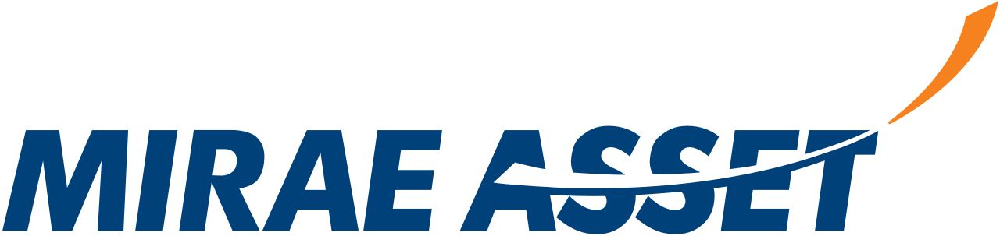
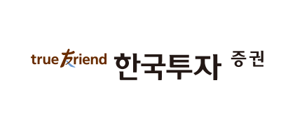

대표 로고대표 브랜드 마크
대표 로고대표 브랜드 마크홈 > 브랜드 매거진 > 키움증권
키움증권
키움증권은 2000년 다우기술과 삼성물산 등이 출자해 키움닷컴증권으로 출범한 온라인 기반 증권사다. 2004년 코스닥, 2009년 유가증권시장에 상장했고 2006년 현재 사명으로 바꿨다. 최대주주는 지분 약 42%의 다우기술로, 다우데이타와 이머니로 이어지는 다우키움그룹 지배구조 아래 있다. 두 전환점은 점포 없는 온라인 위탁매매로 개인 거래 시장을 장악한 초기 도약, 그리고 2025년 발행어음 인가로 초대형 종합금융투자사업자 단계에 들어선 사건이다. 자기자본은...
산업 분야 브랜드·비즈니스 · 공개 등급 자료 기반 · 브랜드 평가 4.2 ★
한눈에 보는 브랜드
키움증권은 2000년 다우기술과 삼성물산 등이 출자해 키움닷컴증권으로 출범한 온라인 기반 증권사다. 2004년 코스닥, 2009년 유가증권시장에 상장했고 2006년 현재 사명으로 바꿨다.
최대주주는 지분 약 42%의 다우기술로, 다우데이타와 이머니로 이어지는 다우키움그룹 지배구조 아래 있다. 두 전환점은 점포 없는 온라인 위탁매매로 개인 거래 시장을 장악한 초기 도약, 그리고 2025년 발행어음 인가로 초대형 종합금융투자사업자 단계에 들어선 사건이다.
자기자본은 2025년 상반기 6조원대로 성장했다.
브랜드 관점
2000년 온라인 거래 특화 증권사로 출범해 다우키움그룹 계열로 성장한 사업자다. 점포 없는 비대면 모델과 낮은 위탁매매 수수료를 무기로 개인 투자자를 흡수하며 국내 주식거래 점유율 1위에 올랐다.
온라인·모바일 시장에서 점유율 약 28%를 확보해 개인 투자자 넷 중 하나가 이용하는 리테일 강자로 자리매김했다. 저비용 셀프 트레이딩이라는 포지셔닝을 일관되게 유지하면서도 위탁매매 의존 구조를 넘어 자산관리와 기업금융으로 외연을 넓히는 체질 개선을 추진하고 있다.
시작과 성장
키움증권의 뿌리는 1986년 김익래 창업주가 세운 정보기술 기업 다우기술이다. 다우기술은 1990년대 데이터·인터넷 계열사를 늘리며 정보기술에 집중하다가, 가정용 초고속 인터넷이 보급되고 온라인 주식거래가 막 열리던 2000년 금융업으로 영역을 넓혀 키움닷컴증권을 출범시켰다.
첫 전환점은 지점 없는 온라인 전용 모델이다. 자체 거래 소프트웨어 영웅문을 앞세워 낮은 수수료로 빠르게 개인 투자자를 끌어모았고, 2004년 코스닥 상장으로 성장을 확인했다.
두 번째 전환점은 사업 다각화다. 2006년 사명을 키움증권으로 바꾸고 2009년 유가증권시장으로 옮겨 상장했으며, 이후 자산운용·저축은행·투자은행으로 계열과 기능을 넓혔다.
그리고 2025년 발행어음 인가를 받아 위탁매매 명가를 넘어 초대형 투자은행 단계에 들어섰다.
브랜드 아이덴티티
키움증권의 정체성은 능동적으로 직접 투자하는 개인에게 저비용·고기능 거래 환경을 제공한다는 약속에 모인다. 상징은 거래 플랫폼 영웅문이다.
이름은 무협소설에서 따왔으며, 투자자가 소설 속 강호의 고수처럼 시장에서 강한 성과를 거두길 바란다는 뜻을 담아 자기주도적 투자자상을 전면에 세운다. 모바일 영웅문S#은 차트·정보 기능과 실전투자대회 같은 참여 요소를 결합해 적극적 매매층을 겨냥하고, 금융·증권 부문 프리미엄 브랜드 평가를 2년 연속 받았다.
브랜드 화법은 전문 트레이더의 도구라는 자신감과 누구나 쉽게 시작한다는 접근성을 함께 강조한다. 사명 키움은 자산을 키운다는 성장의 어감을 담은 것으로 통용된다.
제품과 서비스
PC용 영웅문4 HTS와 모바일 영웅문S#을 축으로 주식 위탁매매를 제공하며, 영웅문SF로 국내·야간 선물옵션과 금현물, 영웅문Global로 해외주식을 다룬다. 국내외 주식 브로커리지가 핵심이며 퇴직연금과 금융상품, 발행어음 기반 자산관리로 서비스 범위를 넓히고 있다.
현재 상태
리테일 브로커리지 선두를 유지하면서 IB와 자산관리 비중을 키워 종합금융투자회사로 전환 중이다. 발행어음 사업 인가를 받아 초대형 IB 체제를 갖췄고 2025년 연간 순이익 1조원을 처음 돌파했다.
2019년 키움뱅크 인터넷전문은행 시도는 무산됐다.
타임라인
정리된 연도형 이벤트가 없습니다.
BI/CI 변천사
대표 로고대표 브랜드 마크함께 읽을 브랜드
 브랜드·비즈니스 · 자료 기반삼성물산
브랜드·비즈니스 · 자료 기반삼성물산삼성물산(Samsung C&T)은 건설·상사·패션·리조트 사업을 아우르는 삼성그룹의 핵심 기업으로, 래미안 아파트 브랜드로 알려져 있다.

브랜드·비즈니스 · 자료 기반미래에셋증권미래에셋증권은 박현주 회장이 이끄는 미래에셋그룹 계열의 종합 증권사다. 1999년 설립된 이래 위탁매매와 투자은행, 자산관리, 자기자본 투자, 글로벌 사업을 아우르는...

브랜드·비즈니스 · 자료 기반한국투자증권한국투자증권은 한국투자금융지주가 지분 전량을 보유한 핵심 자회사로, 뿌리는 1974년 국내 최초 투자신탁 전업사로 출범한 한국투자신탁에 닿아 있다. 2003년 한국투...
 브랜드·비즈니스 · 편집 검수Yahoo
브랜드·비즈니스 · 편집 검수Yahoo야후는 1994년 미국에서 출범한 인터넷 포털·미디어 기업으로, 검색 디렉터리에서 출발해 이메일·뉴스·금융·스포츠 등 폭넓은 온라인 서비스를 운영해 왔다. 1990년...
 브랜드·비즈니스 · 자료 기반삼성증권
브랜드·비즈니스 · 자료 기반삼성증권삼성증권은 1982년 배현규가 서울 명동에 세운 한일투자금융을 모태로 한다. 1991년 국제증권으로 증권업에 전환했고, 1992년 삼성그룹에 편입되며 지금의 상호로...
 브랜드·비즈니스 · 편집 검수Monzo
브랜드·비즈니스 · 편집 검수Monzo몬조(Monzo)는 영국의 디지털 네오뱅크로, 물리적 지점 없이 스마트폰 앱만으로 운영되는 모바일 우선 은행이다. 형광에 가까운 산호색(핫 코랄) 카드를 상징으로 삼...
 브랜드·비즈니스 · 편집 검수Banco Itaú
브랜드·비즈니스 · 편집 검수Banco Itaú이타우(Itaú)는 브라질을 대표하는 민간 은행으로, 1945년 상파울루에서 영업을 시작해 2008년 우니방쿠와 합병하며 이타우 우니방쿠로 거듭났다. 소매·기업·투자...
Br
Brooklyn Org
브랜드·비즈니스 · 편집 검수Brooklyn Org미국 뉴욕 브루클린의 비영리 커뮤니티 재단으로, 2009년 브루클린 커뮤니티 재단(Brooklyn Community Foundation)으로 출범해 2023년 10월...